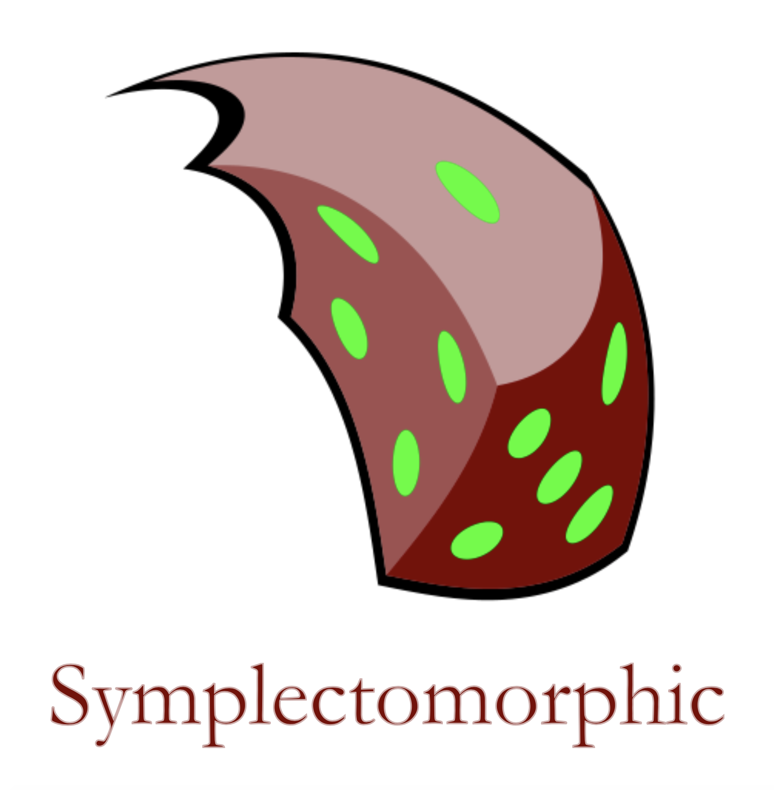
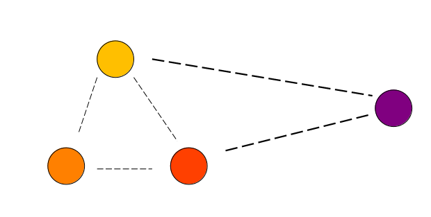
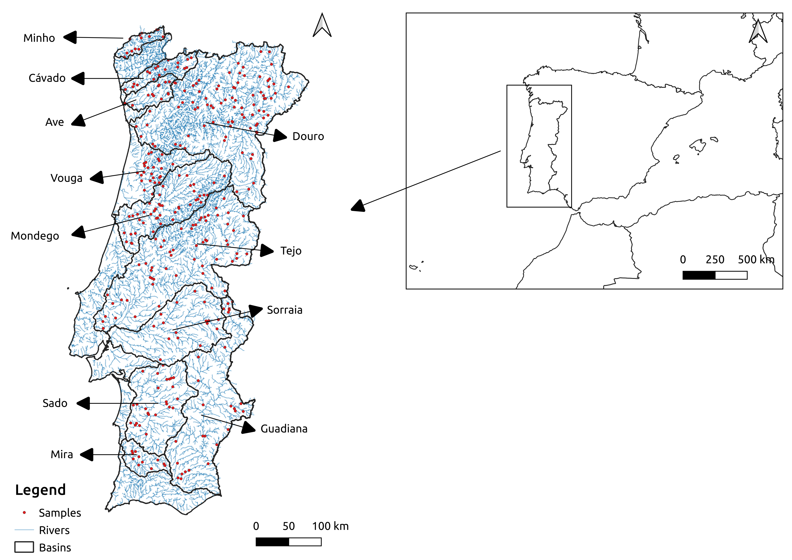
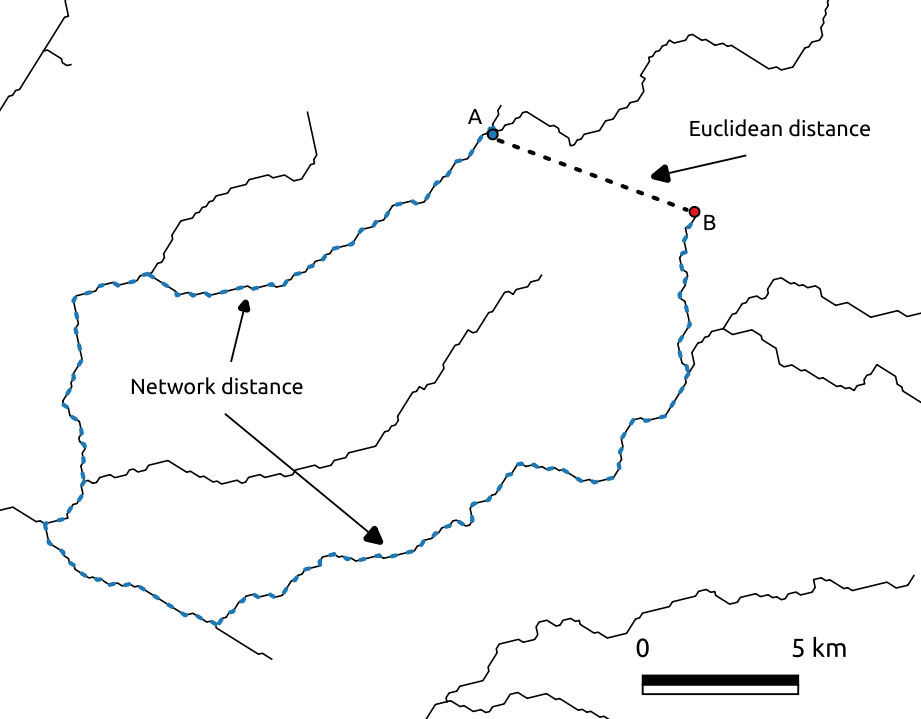
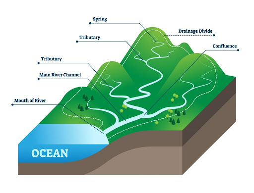
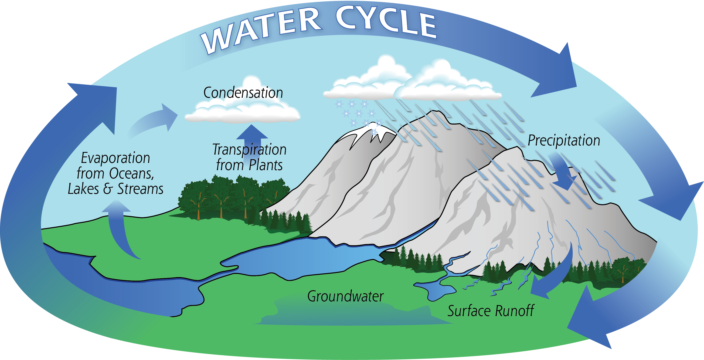
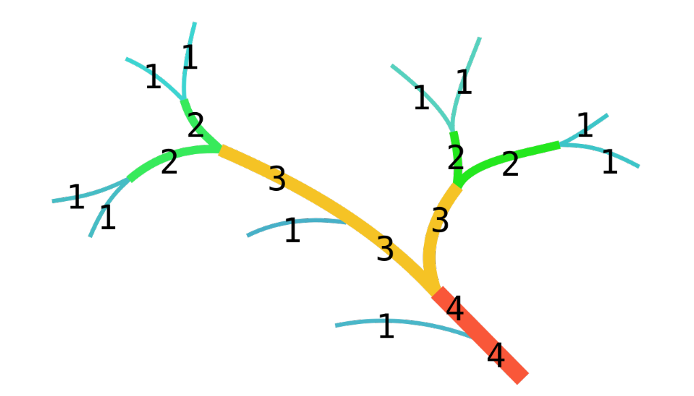
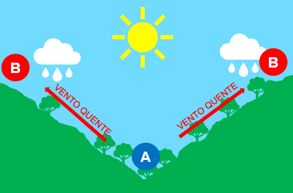

Analysing the distance decay of community similarity in river networks using Bayesian methods
Filipe S. Dias, Michael Betancourt, Patrícia María Rodríguez-González & Luís Borda-de-Água
20º Encontro Nacional de Ecologia

Primeira Lei da Geografia
"Everything is related to everything else, but near things are more related than distant things"
Waldo Tobler (1930-2018)

Decaimento com a distância da semelhança entre comunidades
- Turnover de espécies ao longo de gradientes ambientais
- Fenómenos de "source-sink"
- Teoria das metapopulações
- Teoria da biogeografia das ilhas
Porque é que isto acontece?
Objectivos
Avaliar o efeito de variáveis neutrais e de nicho ecológico sobre o decaimento com a distância
da semelhança entre comunidades de plantas ribeirinhas
Área de Estudo

2003-2006
338 plots e 11 bacias hidrográficas
Semelhança entre comunidades
- Índice de Sørensen (0-1)
- Entre todas as amostras dentro da mesma bacia
Variáveis Neutrais (I)

Variáveis Neutrais (II)
Ligação através do fluxo da água

Fonte:AEE
Variáveis de Nicho (I)
Diferença de Precipitação

Fonte:NASA
Variáveis de Nicho (II)
Diferença de Ordem de Strahler

Fonte:Wiki
Discussão (I)
Distância na rede (I)
- Factores neutrais podem causar extinções, substituição de espécies e dificultar a dispersão
- Contudo...correlação com variável ambiental não medida?
Discussão (II)
Ligação através do fluxo da água
- Dispersão de sementes através da água
- Correlação com os ventos de montanha

Discussão (III)
Diferenças de precipitação
- Zonas mais secas: mais espécies terrestres
- Zonas mais húmidas: mais espécies aquáticas e ripícolas
Discussão (IV)
Diferença de Ordem de Strahler
- Comunidades nas zonas de cabeceira tendem a ser bastante diferentes das comunidades mais próximas da foz do rio.
- Diferenças de disponibilidade de luz e de matéria orgânica, altitude, declive
Discussão (V)
Observámos que tanto os factores ambientais como os factores neutrais parecem estar associados ao decaimento
da semelhança entre comunidades, o que está de acordo com a Hipótese do Continuum